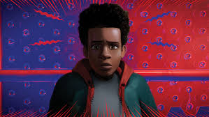
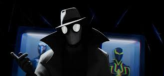

Hobie Brown, also know as Spider-Punk is a British punk-rock varient of SpiderMan from Earth-138, featured heavily in Spider-man Across the Spider-Verse. Voiced by Daniel Kaluuya. He is characterized by his intense disdain for authority, creative anarchic style, and a uniquely animated, "cut-and-paste" visual aesthetic.
2. Miles Morales

Miles Morales is a Brooklyn-born teenager of African-American and Puerto Rican descent who becomes a prominent Spider-Man after gaining spider-like powers similar to Peter Parker. Created by Brian Michael Bendis in 2011, he is known for his unique "Venom Strike" bio-electricity, invisibility .
3. Spider-Noir

Spider-Man Noir, a 1930s-style private investigator and alternate Peter Parker, is a prominent character in the Spider-Verse franchise, voiced by Nicolas Cage in "Into the Spider-Verse". Characterized by his black-and-white look, fedora, and grim demeanor, he is a key member of the interdimensional Spider-Gang.